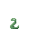
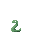

introdution
姓名:魏仲彥
學歷:高中畢業
興趣:鋼琴，畫畫，在電腦前面耍費
專長:吃飯，睡覺
個人特質:擅長看別人甚麼時候生氣，吃飯絕對不請客
其他:這就要由大家一起來觀察了>0<
information

others
其他沒其他
我愛鋼琴
也愛睡覺
愛看動漫(刀劍，柯南，入間，航海王)
也愛畫畫
其他沒其他了
game
遊戲介紹
製作人 : 魏仲彥
繪師 : 魏仲彥
指導老師 : 陳鍾誠老師
source
人物:https://opengameart.org/content/3-cyberpunk-characters
背景:https://opengameart.org/content/city-background-repetitive-3
素材:https://opengameart.org/content/explosion-set-1-m484-games https://opengameart.org/content/meteor-animated-64x64 https://opengameart.org/content/explosion https://opengameart.org/content/animated-fireball https://opengameart.org/content/sparks-fire-ice-blood
moster : https://opengameart.org/content/animated-skeleton https://opengameart.org/content/animated-snake https://opengameart.org/content/bosses-and-monsters-spritesheets-ars-notoria
參考版面: https://www.taipeitimes.com/ https://www.w3schools.com/css/css_form.asp
歡迎到網站簡介(Introduction)
(￣▽￣)~*可以到git hub 去看我的課堂筆記呦~~
| 網站介紹 |
!![大推]點擊game可以玩精心製作的小遊戲(有夠難做இдஇ)!! 左邊的 ☰ 可以看到隱藏的選單 點擊information可以看到我的資訊 點擊information可以看到我的資訊 點擊oters可以看到其他有的沒的 點擊soure可以看到資料參考和圖片來源 Website 右邊有月亮可以點及切換介面顏色呦 |
重要度: ✯✯ |
|---|---|---|
| 資訊介紹 |
有用沒用的資訊都在這大概 這裡還有我的網頁進化史喔，可以看到網頁成長過程 |
重要度: ✯✯✯ |
| 遊戲 |
我只能說，遊戲真的很難做，做完才知道體諒遊戲製造商 寫邏輯真的難 (ఠ్ఠ ˓̭ ఠ్ఠ) 我寫的遊戲沒有用框架，完全純手工打造~~ 只有圖片是外面來的spirtsheet，資料來源遊戲下面和source |
重要度: ✯✯✯✯✯✯✯ |
| 其他 | 這裡有其他的東西(≖‿ゝ≖)✧ 像是繪畫版(功能完整!!)，留言板(0.0) | 重要度: ✯✯✯✯ |
| 參考資料 | 裡面的網站配置我都是看看再作改編，做得太醜請見諒(￣口￣)!! | 重要度: ✯✯✯✯ |
 


歡迎來到遊戲區!!
Player1 Player2
角色控制 :
a (左) Arrow Left (左)
d (右) Arrow Left (右)
k (跳) 2 (跳)
l (加速) 3 (加速)
技能施放 :
j (踢) 1 (踢)
j + w (出拳) 1 + Arrow Up (出拳)
j + s (特攻) 1 + Arrow Down (特攻)
遊戲暫停 : 可以按右上角的暫停鈕或是按 p